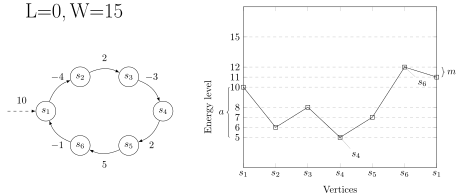

Reachability Games with Relaxed Energy Constraints
Ritam Raha
joint work with
Nicolas Markey Loïc Hélouët
INRIA Rennes INRIA Rennes
1
Games on Graphs: Qualitative/Quantitative
- Two players on a graph: typically system ($P_1$) and environment ($P_2$)
- Qualitative objectives: Reachability, Safety, Büchi
- Quantitative objectives: Energy, Mean-payoff, Discounted
2
Energy with Reachability
- Weights are intergers; w.l.o.g we start with $0$.
Objective: $P_1$ has to reach T maintaining energy level within some given bounds
3
Different Settings: Strong vs Weak Bounds
4
Strong Lower Bound Games
$P_1$ maintains energy level $\geq L$ & reach $T$
Classical Setting: Infinite path setting without reachability
- 1-player L-infinite games are in P and 2-player are in NP $\cap$ coNP
- Idea:
- $P_1$ finds a non-negative cycle and repeat
- memoryless strategies for both players
5
Reductions
With reachability: Same complexity
6
Strong Dual Bound Games
$P_1$ maintains $L \leq$ energy level $\leq U$ & reach $T$
- One player game: PSPACE-complete (reduction from Reachability of bounded one counter automaton )
- Two player game: EXPTIME-complete (reduction from Countdown Games )
With strong bounds, reachability and infinite Games are interreducible!
7
Weak Dual Bound Games
Relax one of the bounds, say the upper bound
- $P_1$ has to maintain energy level $\geq L$ & reach $T$
but
the upper bound $W$ ($U$) is weak,
i.e.,
if energy hits $\geq W$, it stays at $W$.
8
Motivation towards Weak Bounds
Can be formulated as a two player finite state game. [Hélouët et al.'18]
- An intruder takes a large number of normal actions and then does somethings bad. ✕
- With weak upper bound, this is not possible. ✔
8
Infinite vs Reachability in Weak Dual Bound Games
9
Memory for $P_2$
10
1 Player Game
- Consider a winning strategy $\sigma$ of $P_1$.
- Any outcome of $\sigma$ will not have any zero cycle or negative cycle.
- Now, $P_1$ has two options:
- win in an acyclic path
- choose a positive cycle; iterate enough to increase energy; continue
11
Technical Observations
- Same cycle can be positive or negative cycle depending on the initial energy level.
$W = 4$.
- $x=4 \Rightarrow$ a negative cycle
- $x=1 \Rightarrow$ a positive cycle
- A feasible positive cycle can be iterated and the output energy stabilizes.
Why?
12
Positive Cycle

- Reach $s_1$ with energy $\geq 5 (L+a)$ and reach energy level $14 [W-m]$
- #Iterations can be bounded by W-L.
13
Winning Path
14
Universal Cycle
Universal cycle on $q$: a cycle that can be taken with initial energy $L$.
15
NP algorithm for 1 Player Game
- For every cycle, there is a universal cycle.
- Winning paths: $\beta_1 \cdot {\tau_1}^{W-L} \cdot\beta_2\cdot{\tau_2}^{W-L} \cdots \beta_k \cdot {\tau_k}^{W-L}$ where, $\tau_j$'s are universal.
- Use optimal universal cycles: $k<|Q| \Rightarrow$ NP Algorithm!!
- Cycles(EXPTIME) $\Rightarrow$ Universal Cycles(EXPTIME) $\Rightarrow$ Optimal UC(NP) $\Rightarrow$ P ?
- Idea for P:
- Find Optimal UC in P
- Find the winning path in P
16
Road to P: DAG-construction
17
Polynomial Algorithm
- Compute $m_q$ for each state q if it has an optimal universal cycle
- Construct $G'$ adding transition $\upsilon_q: q \xrightarrow{:=W-m_q} q$.
- Winning paths: $\beta_1 \cdot \upsilon_1 \cdots \beta_k\cdot \upsilon_k$
- path size $ \leq (|Q+1|)^2$:
PTIME!
Corollary: Two player LW-reachability is in coNP.
18
Conclusion
- With strong bounds, reachability does not differ from the classical energy objective settings.
- Relaxation of a bound does change the strategies for $P_1$, but it is still in coNP.
19